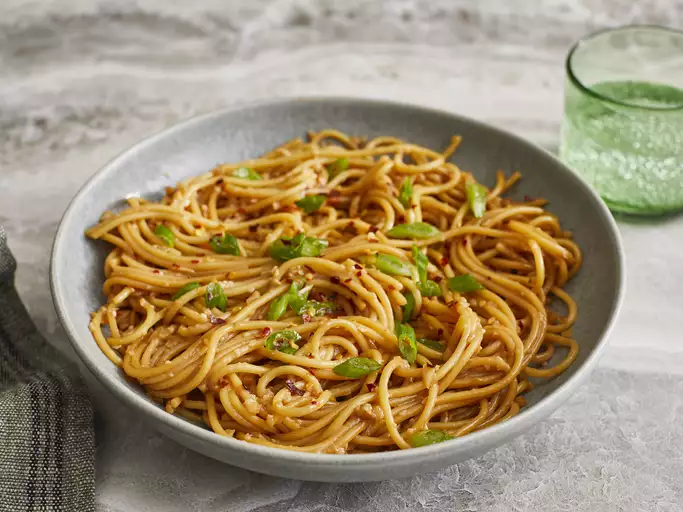

Noodles

Description
Noodles are a versatile and beloved dish enjoyed across the globe. Made from unleavened dough, noodles can be boiled, fried, or steamed, depending on the dish. Whether served in a savory broth, tossed with stir-fried vegetables, or mixed with sauces, noodles can be adapted to a wide range of cuisines, from Chinese and Italian to Thai and Japanese.
The key to perfect noodles lies in their texture—soft, chewy, and well-cooked. Paired with a flavorful sauce, meat, or vegetables, noodles make for a hearty meal that's quick to prepare and easy to customize. From simple pasta dishes to elaborate noodle stir-fries, noodles are a satisfying meal option for any time of day.
Ingredients
- 8 oz noodles (egg noodles, ramen, or your preferred type)
- 2 tbsp vegetable oil
- 1/2 onion, thinly sliced
- 2 cloves garlic, minced
- 1 cup sliced mushrooms (optional)
- 1 bell pepper, thinly sliced
- 2 tbsp soy sauce
- 1 tbsp oyster sauce (optional)
- 1 tbsp sesame oil
- 1 tsp sugar
- Salt and pepper to taste
- Fresh herbs or green onions for garnish (optional)
Steps
- Bring a large pot of water to a boil and cook the noodles according to the package instructions. Drain and set aside.
- Heat vegetable oil in a large skillet or wok over medium-high heat.
- Add the sliced onion and garlic to the skillet and sauté for 2-3 minutes until fragrant.
- If using, add the mushrooms and bell pepper, and stir-fry for another 4-5 minutes until they soften and begin to brown.
- Add the cooked noodles to the skillet and toss to combine with the vegetables.
- In a small bowl, mix together the soy sauce, oyster sauce (if using), sesame oil, and sugar. Pour the sauce over the noodles and vegetables.
- Toss everything together to coat the noodles evenly with the sauce. Cook for another 2-3 minutes until heated through and slightly caramelized.
- Season with salt and pepper to taste, and garnish with fresh herbs or green onions if desired.
- Serve the noodles hot, either as a main dish or a side dish alongside your favorite protein.